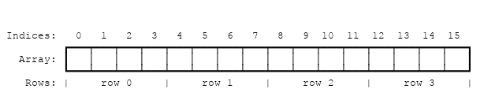

게임 구현하기
디자인
들어가기 전에 고려해야 할 몇 가지 디자인 선택 사항이 있습니다.
무한한 우주
Game of Life는 무한한 우주에서 진행되지만 메모리와 컴퓨팅 파워는 무한하지 못합니다. 이 다소 성가신 제한을 해결하기 위해 일반적으로 세 가지 방법 중 하나를 통해 제공됩니다.
-
우주의 어느 장소에서 흥미로운 일이 일어나고 있는지 추적하고, 필요에 따라 이 영역을 확장합니다. 최악의 경우 이 확장은 제한이 없기 때문에 구현이 점점 느려지고 결국 메모리 부족을 야기할 것입니다.
-
가장자리에 있는 셀의 인접한 셀의 수가 중간에 있는 세포보다 적은 고정된 크기의 우주를 만듦니다. 하지만 무한 글라이더처럼 우주의 끝에 도달하는 패턴이 제거된다는 단점이 있습니다.
- 고정된 크기지만 반복되는 우주를 만듭니다. 여기에서 가장자리의 셀은 우주의 반대쪽 셀과 연결되어 있습니다. 따라서 글라이더는 영원히 계속 달릴 수 있습니다.
우리는 세 번째 방식을 구현할 것입니다.
Rust와 JavaScript 연결하기
⚡ 이것은 이 튜토리얼에서 이해해야 할 가장 중요한 개념 중 하나입니다!
JavaScript의 garbage-collected heap(여기에 Object, Array 및 DOM 트리가 할당되어 있음) 공간은 Rust 값이 있는 WebAssembly의 선형 메모리 공간과 다릅니다. WebAssembly는 현재 garbage-collected heap에 직접 액세스할 수 없습니다(2018년 4월 현재 인터페이스 유형으로 변경될 예정임). 반면 JavaScript는 WebAssembly 선형 메모리 공간을 읽고 쓸 수 있지만 스칼라 값(u8, i32, f64 등)의 ArrayBuffer로만 가능합니다. ..). WebAssembly 함수는 스칼라 값도 사용하고 반환합니다. 이것들은 모든 WebAssembly 및 JavaScript 통신을 구성하는 빌딩 블록입니다.
'wasm_bindgen'은 Rust와 WebAssembly의 경계를 넘어 복합한 구조를 작업하는 방법에 대한 일반적인 이해를 정의합니다. 여기에는 Rust 구조를 랩핑하고, 사용성을 위해 JavaScript 클래스에 포인터를 래핑하거나 Rust에 JavaScript 객체 테이블을 인덱싱하는 작업이 포함됩니다. wasm_bindgen은 매우 편리하지만 데이터 표현과 이 경계를 넘어 전달되는 값과 구조를 고려할 필요가 없습니다. 단지 인터페이스 디자인을 구현하기 위한 도구로 생각하십시오.
WebAssembly와 JavaScript 간의 인터페이스를 설계할 때 다음 속성을 고려하고자 합니다
-
WebAssembly 선형 메모리의 복사를 최소화합니다. 불필요한 복사는 불필요한 오버헤드를 야기합니다.
-
직렬화1 및 역직렬화 최소화. 복사와 마찬가지로 직렬화 및 역직렬화도 오버헤드를 부과하고 종종 복사도 부과합니다. 불투명 핸들을 데이터 구조에 전달할 수 있다면(한 쪽에서 직렬화한 뒤 WebAssembly 선형 메모리의 알려진 위치에 복사하고, 다른 쪽에서 역직렬화하는 대신) 많은 오버헤드를 줄일 수 있습니다.
wasm_bindgen은 JavaScriptObject또는 boxed Rust 구조에 대한 불투명 핸들을 정의하기 때문에 작업에 도움이 됩니다
일반적으로 좋은 JavaScript↔WebAssembly 인터페이스 디자인은 길고 수명이 긴 데이터 구조가 WebAssembly 선형 메모리에 있는 Rust 유형으로 구현되고 JavaScript에 불투명 핸들로 노출되는 경우가 많습니다. JavaScript는 이러한 불투명 핸들을 취하고, 데이터를 변환하고, 많은 계산을 수행하고, 데이터를 쿼리하고, 궁극적으로 복사 가능한 작은 결과를 반환하는 내보낸 WebAssembly 함수를 호출합니다. 계산의 작은 결과만 반환함으로써 JavaScript의 garbage-collected heap과 WebAssembly 선형 메모리 사이에서 양쪽으로 많은 것들을 복사 및/또는 직렬화하는 것을 피할 수 있습니다.
생명게임에서 Life에서 Rust와 JavaScript 간의 인터페이스
피해야 할 몇 가지 위험을 열거하는 것으로 시작하겠습니다. 우리는 매 틱마다 WebAssembly 선형 메모리 안팎으로 전체 우주를 복사하고 싶지 않습니다. 우리는 우주의 모든 셀에 개체를 할당하고 싶지 않으며 각 셀을 읽고 쓰기 위해 경계를 넘는 호출을 부과하고 싶지도 않습니다.
이것이 우리를 다음과 같이 구현하도록 할 것입니다. WebAssembly 선형 메모리에 있고 각 셀에 대한 바이트가 있는 평면 배열로 우주를 나타낼 수 있습니다. '0'은 죽은 세포이고 '1'은 살아있는 세포입니다.
메모리에서 4 x 4 우주는 다음과 같습니다.

우주의 주어진 행과 열에서 셀의 실제 주소를 찾기 위해, 우리는 다음 공식을 사용할 수 있습니다.
index(row, column, universe) = row * width(universe) + column
우리는 우주의 세포를 자바스크립트에 노출시키는 몇 가지 방법이 있습니다. 먼저 우주를 구현하기 위하여 ['std::fmt::Display']를 구현합니다. 이는 텍스트 문자로 렌더링된 셀의 Rust String을 생성하는 데 사용할 수 있습니다. 이 Rust String은 WebAssembly 선형 메모리에서 JavaScript의 garbage-collected heap에 있는 JavaScript 문자열로 복사된 다음 HTML textContent를 설정하여 표시됩니다. 챕터의 후반부에서, 우리는 이 구현을 진화시켜 우주의 세포들을 겹겹이 사이에 복사하는 것을 피하고 <canvas>로 렌더링할 것이다.
또 다른 실행 가능한 디자인 대안은 전체 우주를 JavaScript에 노출하는 대신 Rust가 각 틱 후에 상태를 변경한 모든 셀의 목록을 반환하는 것입니다. 이렇게 하면 JavaScript는 렌더링할 때 전체 유니버스를 반복할 필요가 없으며 관련 하위 집합만 반복할 수 있습니다. 이 변화-기반 설계는 구현하기가 약간 더 어렵다는 단점이 있습니다.
Rust 구현
이전 장에서 초기 프로젝트 템플릿을 복제했습니다. 이제 해당 프로젝트 템플릿을 사용할 것입니다.
wasm-game-of-life/src/lib.rs에서 alert 가져오기 및 greet 기능을 제거하고 셀과 관련된 자료형들을 정의하는 것으로 시작하겠습니다.
#![allow(unused)] fn main() { #[wasm_bindgen] #[repr(u8)] #[derive(Clone, Copy, Debug, PartialEq, Eq)] pub enum Cell { Dead = 0, Alive = 1, } }
각 셀이 단일 바이트로 표시되도록 #[repr(u8)]이 있는 것이 중요합니다. Dead는 0이고 Alive는 1에 대응된다는 것도 중요하므로 덧셈을 통해 셀의 살아있는 이웃을 쉽게 계산할 수 있습니다.
다음으로, 우주를 정의합시다. 우주에는 너비와 높이가 있고 길이가 width * height인 셀의 벡터가 있습니다.
#![allow(unused)] fn main() { #[wasm_bindgen] pub struct Universe { width: u32, height: u32, cells: Vec<Cell>, } }
주어진 행과 열에 있는 셀에 액세스하려면 앞에서 설명한 대로 행과 열을 인덱스로 변환하여 셀 벡터로 변환합니다.
#![allow(unused)] fn main() { impl Universe { fn get_index(&self, row: u32, column: u32) -> usize { (row * self.width + column) as usize } // ... } }
세포의 다음 상태를 계산하기 위해 우리는 얼마나 많은 이웃이 살아 있는지 세어야 합니다. 그렇게 하기 위해 live_neighbor_count 메소드를 작성해 봅시다!
#![allow(unused)] fn main() { impl Universe { // ... fn live_neighbor_count(&self, row: u32, column: u32) -> u8 { let mut count = 0; for delta_row in [self.height - 1, 0, 1].iter().cloned() { for delta_col in [self.width - 1, 0, 1].iter().cloned() { if delta_row == 0 && delta_col == 0 { continue; } let neighbor_row = (row + delta_row) % self.height; let neighbor_col = (column + delta_col) % self.width; let idx = self.get_index(neighbor_row, neighbor_col); count += self.cells[idx] as u8; } } count } } }
live_neighbor_count 매소드는 변화와 나머지 연산을 사용하여 if문을 통해 우주의 가장자리를 특수 케이스로 사용하는 것을 방지합니다. 변화량 -1을 적용할 때 self.height - 1을 더합니다. 1을 빼는 것을 나머지 연산이 대체하도록 합니다. row와 column은 0이 될 수 있는데, 여기서 1을 빼려고 하면 unsigned integer underflow가 발생합니다.
이제 현재 세대에서 다음 세대를 계산하는 데 필요한 모든 것이 있습니다! 게임의 각 규칙은 match 표현식에 대한 조건으로의 직접적인 번역을 따릅니다. 또한 JavaScript가 틱이 발생하는 시점을 제어하기를 원하기 때문에 이 메소드를 #[wasm_bindgen] 블록 안에 넣어 JavaScript에 노출되도록 할 것입니다.
#![allow(unused)] fn main() { /// JavaScript로 내보낼 Public methods. #[wasm_bindgen] impl Universe { pub fn tick(&mut self) { let mut next = self.cells.clone(); for row in 0..self.height { for col in 0..self.width { let idx = self.get_index(row, col); let cell = self.cells[idx]; let live_neighbors = self.live_neighbor_count(row, col); let next_cell = match (cell, live_neighbors) { // 규칙 1: 살아있는 이웃이 2개 미만인 살아있는 세포는 // 마치 인구 부족으로 인한 것처럼 죽습니다. (Cell::Alive, x) if x < 2 => Cell::Dead, // 규칙 2: 살아있는 이웃이 2~3개 있는 살아있는 세포는 // 다음 세대에 계속 살아갑니다. (Cell::Alive, 2) | (Cell::Alive, 3) => Cell::Alive, // 규칙 3: 살아있는 이웃이 세 개 이상 있는 살아있는 // 세포는 마치 인구 과잉으로 인해 죽는 것처럼 보입니다. (Cell::Alive, x) if x > 3 => Cell::Dead, // 규칙 4: 정확히 3개의 살아있는 이웃이 있는 죽은 세포는 // 마치 번식에 의한 것처럼 살아있는 세포가 됩니다. (Cell::Dead, 3) => Cell::Alive, // 다른 모든 셀은 동일한 상태로 유지됩니다. (otherwise, _) => otherwise, }; next[idx] = next_cell; } } self.cells = next; } // ... } }
지금까지 우주의 상태는 세포의 벡터로 표현되었습니다. 사람이 읽을 수 있도록 기본 텍스트 렌더러를 구현해 보겠습니다. 아이디어는 우주를 한 줄씩 텍스트로 작성하고 살아 있는 각 셀에 대해 유니코드 문자 ◼("검정색 중간 정사각형")를 인쇄하는 것입니다. 죽은 세포의 경우 ◻("흰색 중간 정사각형")를 인쇄합니다.
Rust의 표준 라이브러리에서 Display 트레잇을 구현함으로써 우리는 사용자가 보는 방식으로 구조를 설정하는 방법을 추가할 수 있습니다. 이것은 또한 자동으로 to_string 메서드를 제공합니다.
#![allow(unused)] fn main() { use std::fmt; impl fmt::Display for Universe { fn fmt(&self, f: &mut fmt::Formatter) -> fmt::Result { for line in self.cells.as_slice().chunks(self.width as usize) { for &cell in line { let symbol = if cell == Cell::Dead { '◻' } else { '◼' }; write!(f, "{}", symbol)?; } write!(f, "\n")?; } Ok(()) } } }
마지막으로 살아있는 세포와 죽은 세포의 흥미로운 패턴과 'render' 메서드로 우주를 초기화하는 생성자를 정의합니다.
#![allow(unused)] fn main() { /// JavaScript로 내보낼 Public methods. #[wasm_bindgen] impl Universe { // ... pub fn new() -> Universe { let width = 64; let height = 64; let cells = (0..width * height) .map(|i| { if i % 2 == 0 || i % 7 == 0 { Cell::Alive } else { Cell::Dead } }) .collect(); Universe { width, height, cells, } } pub fn render(&self) -> String { self.to_string() } } }
이것으로 Game of Life 구현의 Rust 부분의 절반이 완료되었습니다!
wasm-game-of-life 디렉토리 내에서 wasm-pack build를 실행하여 WebAssembly로 다시 컴파일하십시오.
자바스크립트로 랜더링하기
먼저 <pre> 요소를 wasm-game-of-life/www/index.html에 추가하여 <script> 태그 바로 위의 우주를 렌더링해 보겠습니다.
<body>
<pre id="game-of-life-canvas"></pre>
<script src="./bootstrap.js"></script>
</body>
추가적으로, 우리는 웹 페이지의 중앙에 <pre>가 표시되길 원합니다. CSS flex box를 사용하여 이 작업을 수행할 수 있습니다. wasm-game-of-life/www/index.html의 <head> 안에 다음 <style> 태그를 추가합니다.
<style>
body {
position: absolute;
top: 0;
left: 0;
width: 100%;
height: 100%;
display: flex;
flex-direction: column;
align-items: center;
justify-content: center;
}
</style>
wasm-game-of-life/www/index.js 파일 상단에서 이전의 greet 기능 대신 Universe를 가져오도록 import 구문을 수정하겠습니다.
import { Universe } from "wasm-game-of-life";
또한 방금 추가한 <pre> 요소를 가져와서 새 우주의 인스턴스를 생성하겠습니다.
const pre = document.getElementById("game-of-life-canvas");
const universe = Universe.new();
JavaScript는 requestAnimationFrame 루프에서 실행됩니다. 각 반복에서 현재 우주를 <pre>로 그린 다음 Universe::tick을 호출합니다.
const renderLoop = () => {
pre.textContent = universe.render();
universe.tick();
requestAnimationFrame(renderLoop);
};
렌더링 프로세스를 시작하려면 렌더링 루프의 첫 번째 반복에 대한 초기 호출을 수행하기만 하면 됩니다.
requestAnimationFrame(renderLoop);
개발 서버가 여전히 실행 중인지 확인하십시오. (wasm-game-of-life/www 디렉토리 내부에서 npm run start 명령어 실행). 이곳
http://localhost:8080/ 에서 볼 수 있습니다.
{kind=link}
메모리에서 직접 캔버스로 렌더링
Rust에서 String을 생성(및 할당)한 다음 wasm-bindgen이 이를 유효한 JavaScript 문자열로 변환하도록 하면 우주 셀의 불필요한 복사본이 만들어집니다. JavaScript 코드는 이미 우주의 너비와 높이를 알고 있고 셀을 직접 구성하는 WebAssembly의 선형 메모리를 읽을 수 있으므로 render 메서드를 수정하여 셀 배열의 시작 부분에 대한 포인터를 반환토록 만들 것입니다..
또한 유니코드 텍스트를 렌더링하는 대신 Canvas API를 사용하도록 바꿀 것입니다. 튜토리얼의 나머지 부분에서 이 방식을 사용할 것입니다.
wasm-game-of-life/www/index.html 내부에서 이전에 추가한 <pre>를 새롭게 렌더링할 <canvas>로 교체해 보겠습니다. (<body> 테그 내부 및 JavaScript를 로드하는 <script> 테그 앞에 있어야 합니다.):
<body>
<canvas id="game-of-life-canvas"></canvas>
<script src='./bootstrap.js'></script>
</body>
Rust 구현에서 필요한 정보를 얻으려면 우주의 너비, 높이 및 셀 배열에 대한 포인터에 대한 getter 함수를 더 추가해야 합니다. 이 모든 것은 JavaScript에도 노출됩니다. wasm-game-of-life/src/lib.rs에 다음을 추가합시다.
#![allow(unused)] fn main() { /// Public methods, exported to JavaScript. #[wasm_bindgen] impl Universe { // ... pub fn width(&self) -> u32 { self.width } pub fn height(&self) -> u32 { self.height } pub fn cells(&self) -> *const Cell { self.cells.as_ptr() } } }
다음으로, wasm-game-of-life/www/index.js에서 wasm-game-of-life에서 Cell을 가져와서 캔버스에 렌더링할 때 사용할 상수를 정의해 보겠습니다.
import { Universe, Cell } from "wasm-game-of-life";
const CELL_SIZE = 5; // px
const GRID_COLOR = "#CCCCCC";
const DEAD_COLOR = "#FFFFFF";
const ALIVE_COLOR = "#000000";
이제 이 JavaScript 코드의 나머지 부분을 다시 작성하여 더 이상 <pre>의 textContent에 쓰지 않고 대신 <canvas>에 그릴 것입니다.
// 우주를 생성하고 너비와 높이를 구하십시오.
const universe = Universe.new();
const width = universe.width();
const height = universe.height();
// 모든 셀이 1px 테두리를 갖게끔 캔버스 크기를 설정합니다.
const canvas = document.getElementById("game-of-life-canvas");
canvas.height = (CELL_SIZE + 1) * height + 1;
canvas.width = (CELL_SIZE + 1) * width + 1;
const ctx = canvas.getContext('2d');
const renderLoop = () => {
universe.tick();
drawGrid();
drawCells();
requestAnimationFrame(renderLoop);
};
셀 사이의 격자를 그리기 위해 동일한 간격의 가로선과 세로선들을 그립니다. 이 선은 십자형으로 교차하여 격자 형태를 형성합니다.
const drawGrid = () => {
ctx.beginPath();
ctx.strokeStyle = GRID_COLOR;
// Vertical lines.
for (let i = 0; i <= width; i++) {
ctx.moveTo(i * (CELL_SIZE + 1) + 1, 0);
ctx.lineTo(i * (CELL_SIZE + 1) + 1, (CELL_SIZE + 1) * height + 1);
}
// Horizontal lines.
for (let j = 0; j <= height; j++) {
ctx.moveTo(0, j * (CELL_SIZE + 1) + 1);
ctx.lineTo((CELL_SIZE + 1) * width + 1, j * (CELL_SIZE + 1) + 1);
}
ctx.stroke();
};
raw wasm 모듈 wasm_game_of_life_bg에 정의된 memory를 통해 WebAssembly의 선형 메모리에 직접 액세스할 수 있습니다. 셀을 그리려면 우주의 셀에 대한 포인터를 얻고, 셀 버퍼를 오버레이하는 'Uint8Array'를 구성하고, 각 셀을 반복하고, 셀이 죽었는지 살았는지에 따라 흰색 또는 검은색 직사각형을 각각 그려야 합니다. 포인터와 오버레이로 작업함으로써 모든 틱에서 경계를 가로질러 셀을 복사하는 것을 방지합니다.
// 파일 맨 윗부분에서 WebAssembly 메모리를 가져옵니다.
import { memory } from "wasm-game-of-life/wasm_game_of_life_bg";
// ...
const getIndex = (row, column) => {
return row * width + column;
};
const drawCells = () => {
const cellsPtr = universe.cells();
const cells = new Uint8Array(memory.buffer, cellsPtr, width * height);
ctx.beginPath();
for (let row = 0; row < height; row++) {
for (let col = 0; col < width; col++) {
const idx = getIndex(row, col);
ctx.fillStyle = cells[idx] === Cell.Dead
? DEAD_COLOR
: ALIVE_COLOR;
ctx.fillRect(
col * (CELL_SIZE + 1) + 1,
row * (CELL_SIZE + 1) + 1,
CELL_SIZE,
CELL_SIZE
);
}
}
ctx.stroke();
};
렌더링 프로세스를 시작하려면 위와 동일한 코드를 사용하여 렌더링 루프의 첫 번째 반복을 시작합니다.
drawGrid();
drawCells();
requestAnimationFrame(renderLoop);
requestAnimationFrame()을 호출하기 전에 여기서 drawGrid() 및 drawCells()를 호출합니다. 이렇게 하는 이유는 수정하기 전에 우주의 초기 상태가 그려지기 때문입니다. 대신 단순히 requestAnimationFrame(renderLoop)을 호출하면 그려지는 첫 번째 프레임이 실제로는 universe.tick()에 대한 첫 번째 호출이 나중이 되는 상황이 됩니다. 이는 이 세포의 수명에 대한 두 번째 "틱"입니다.
작동 확인!
wasm-game-of-life 디렉토리에서 다음 명령을 실행하여 WebAssembly 및 바인딩 glue를 다시 빌드합니다.
wasm-pack build
개발 서버가 여전히 실행 중인지 확인하십시오. 그렇지 않은 경우 wasm-game-of-life/www 디렉토리에서 다음 명령어를 다시 시작하십시오.
npm run start
http://localhost:8080/을 새로고침하면 흥미진진한 생명 게임을 맞이할 수 있을 것입니다!
{kind=link}
그 외에 hashlife라는 Game of Life를 구현하기 위한 정말 깔끔한 알고리즘도 있습니다. 공격적인 메모이제이션을 사용하며 실제로 기하급수적으로 빠르게 미래 세대를 더 오래 실행할 수 있습니다! 이를 감안할 때 이 튜토리얼에서 해시라이프를 구현하지 않은 이유가 궁금할 것입니다. 우리가 Rust와 WebAssembly 통합에 초점을 맞추고 있는 이 텍스트의 범위를 벗어났지만 hashlife에 대해 직접 배우기를 강력히 권장합니다!
연습문제
-
하나의 우주선으로 우주를 초기화하십시오.
-
초기 우주를 하드 코딩하는 대신, 각 셀이 살아 있거나 죽을 확률이 50:50인 임의의 우주를 생성하십시오.
-
Initialize the universe with a single space ship.
-
Instead of hard-coding the initial universe, generate a random one, where each cell has a fifty-fifty chance of being alive or dead.
힌트:
js-sys크레이트 를 사용합시다. 이는Math.randomJavaScript 함수와 비슷합니다.정답
*먼저, `js-sys`종속성을 `wasm-game-of-life/Cargo.toml`에 추가합니다:*# ... [dependencies] js-sys = "0.3" # ...그러면
js_sys::Math::random를 통해 동전 던지를 기능을 사용할 수 있습니다.:#![allow(unused)] fn main() { extern crate js_sys; // ... if js_sys::Math::random() < 0.5 { // Alive... } else { // Dead... } } -
각 셀을 바이트로 나타내면 셀을 쉽게 반복할 수 있지만 메모리 낭비가 발생합니다. 각 바이트는 8비트이지만 각 셀이 살아 있는지 여부를 나타내기 위해 단 하나의 비트만 필요합니다. 각 셀이 단일 비트 공간만 사용하도록 데이터 표현을 리팩터링합니다.
정답
Rust에서는 'fixedbitset' 크레이트 및 'FixedBitSet' 타입을 사용하여
Vec<Cell>대신 셀을 나타낼 수 있습니다.#![allow(unused)] fn main() { // Cargo.toml에 종속성을 추가했는지 확인하십시오! extern crate fixedbitset; use fixedbitset::FixedBitSet; // ... #[wasm_bindgen] pub struct Universe { width: u32, height: u32, cells: FixedBitSet, } }우주 생성자는 다음과 같이 조정할 수 있습니다.
#![allow(unused)] fn main() { pub fn new() -> Universe { let width = 64; let height = 64; let size = (width * height) as usize; let mut cells = FixedBitSet::with_capacity(size); for i in 0..size { cells.set(i, i % 2 == 0 || i % 7 == 0); } Universe { width, height, cells, } } }유니버스의 다음 틱에서 셀을 업데이트하려면
FixedBitSet의set메서드를 사용합니다.#![allow(unused)] fn main() { next.set(idx, match (cell, live_neighbors) { (true, x) if x < 2 => false, (true, 2) | (true, 3) => true, (true, x) if x > 3 => false, (false, 3) => true, (otherwise, _) => otherwise }); }비트 시작에 대한 포인터를 JavaScript에 전달하려면
FixedBitSet을 슬라이스로 변환한 다음 슬라이스를 포인터로 변환할 수 있습니다.#![allow(unused)] fn main() { #[wasm_bindgen] impl Universe { // ... pub fn cells(&self) -> *const u32 { self.cells.as_slice().as_ptr() } } }JavaScript에서 Wasm 메모리에서
Uint8Array를 구성할 때 배열의 길이가 더 이상 바이트당width * height가 아니라width * height / 8이라는 주의하십시오:const cells = new Uint8Array(memory.buffer, cellsPtr, width * height / 8);인덱스와 'Uint8Array'가 주어지면 n번째 비트가 다음 함수로 설정되었는지 확인할 수 있습니다.
const bitIsSet = (n, arr) => { const byte = Math.floor(n / 8); const mask = 1 << (n % 8); return (arr[byte] & mask) === mask; };이 모든 것을 감안할 때
drawCells의 새 버전은 다음과 같습니다.const drawCells = () => { const cellsPtr = universe.cells(); // This is updated! const cells = new Uint8Array(memory.buffer, cellsPtr, width * height / 8); ctx.beginPath(); for (let row = 0; row < height; row++) { for (let col = 0; col < width; col++) { const idx = getIndex(row, col); // This is updated! ctx.fillStyle = bitIsSet(idx, cells) ? ALIVE_COLOR : DEAD_COLOR; ctx.fillRect( col * (CELL_SIZE + 1) + 1, row * (CELL_SIZE + 1) + 1, CELL_SIZE, CELL_SIZE ); } } ctx.stroke(); };
역자 주) 직렬화는 메모리를 디스크에 저장하거나 네트워크 통신에 사용하기 위한 형식으로 변환하는 것을 말한다. 참조 형식 데이터를 전송할 수는 없지 않는가?